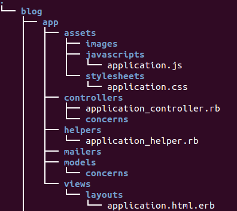
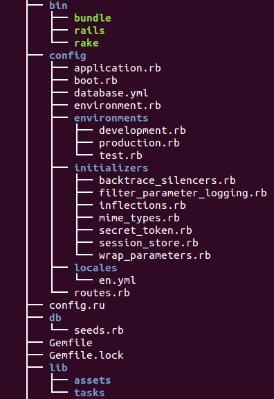
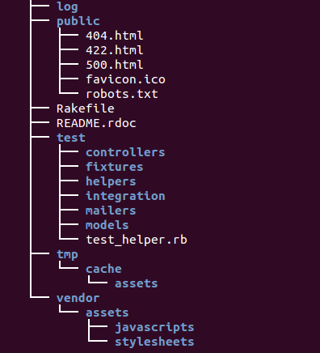

Rails Project 2017
Ruby on Rails, often simply Rails, is an open source web application framework which runs on the Ruby programming language. It is a full-stack framework: it allows creating pages and applications that gather information from the web server, talk to or query the database, and render templates out of the box. As a result, Rails features a routing system that is independent of the web server. - from wiki
The Rails philosophy includes two major guiding principles:
DRY - "Don't Repeat Yourself" - suggests that writing the same code over and over again is a bad thing.
Convention Over Configuration - means that Rails makes assumptions about what we want to do and how we're going to do it, rather than requiring us to specify every little thing through endless configuration files. - from http://guides.rubyonrails.org/
The RubyGems software allows us to download, install, and use ruby software packages on our system. RubyGems is a package manager for Ruby projects and contains a package Ruby application or library (including Rails). It is available as Ruby packages, or gems.
Ruby 1.9 and newer ships with RubyGems built-in but we may need to upgrade for bug fixes or new features. To upgrade RubyGems or install it, visit the download page.
Note: we may want to update/upgrade our current system. As an example, for Ubuntu, we do:
$ apt-get update $ apt-get upgrade
Now, let's work on RubyGems:
$ sudo gem install rubygems-update Fetching: rubygems-update-2.2.2.gem (100%) Successfully installed rubygems-update-2.2.2 Parsing documentation for rubygems-update-2.2.2 Installing ri documentation for rubygems-update-2.2.2 Done installing documentation for rubygems-update after 5 seconds 1 gem installed $ sudo update_rubygems RubyGems 2.2.2 installed Installing ri documentation for rubygems-2.2.2 ... RubyGems installed the following executables: /usr/bin/gem1.9.1 ...
The RubyGems has been installed.
We need to make sure Ruby is already installed:
$ ruby -v ruby 1.9.3p484 (2013-11-22 revision 43786) [x86_64-linux]
To install Rails, use the gem install command provided by RubyGems which we discussed in the previous section: the RubyGems is a package manager for Ruby:
$ gem install rails Successfully installed rails-4.1.1 1 gem installed
Rails provides us with a number of scripts called generators that are designed to create everything that's necessary to start working on a particular task. One of these is the new application generator, which will provide us with the foundation of a fresh Rails application so that we don't have to write it ourselves.
The syntax looks like this:
$ rails new PROJECT_NAME $ cd PROJECT_NAME
Now, we will create a Rails application called Blog in a directory called blog and install the gem dependencies that are already mentioned in Gemfile using bundle install.
$ rails new blog
We may get the following error:
$ rails new blog
...
create vendor/assets/stylesheets
create vendor/assets/stylesheets/.keep
run bundle install
/usr/bin/ruby1.9.1: No such file or directory -- /usr/share/rubygems-integration/1.9.1/gems/bundler-1.3.5/bin/bundle (LoadError)
Then, we should install the gem dependencies that are already mentioned in Gemfile using bundle install:
$ gem install bundler $ bundle install
If we run the rails new blog again:
$ rm -rf blog
$ rails new blog
create
create README.rdoc
create Rakefile
create config.ru
create .gitignore
create Gemfile
create app
create app/assets/javascripts/application.js
create app/assets/stylesheets/application.css
create app/controllers/application_controller.rb
create app/helpers/application_helper.rb
create app/views/layouts/application.html.erb
create app/assets/images/.keep
create app/mailers/.keep
create app/models/.keep
create app/controllers/concerns/.keep
create app/models/concerns/.keep
create bin
create bin/bundle
create bin/rails
create bin/rake
create config
create config/routes.rb
create config/application.rb
create config/environment.rb
create config/secrets.yml
create config/environments
create config/environments/development.rb
create config/environments/production.rb
create config/environments/test.rb
create config/initializers
create config/initializers/backtrace_silencers.rb
create config/initializers/cookies_serializer.rb
create config/initializers/filter_parameter_logging.rb
create config/initializers/inflections.rb
create config/initializers/mime_types.rb
create config/initializers/session_store.rb
create config/initializers/wrap_parameters.rb
create config/locales
create config/locales/en.yml
create config/boot.rb
create config/database.yml
create db
create db/seeds.rb
create lib
create lib/tasks
create lib/tasks/.keep
create lib/assets
create lib/assets/.keep
create log
create log/.keep
create public
create public/404.html
create public/422.html
create public/500.html
create public/favicon.ico
create public/robots.txt
create test/fixtures
create test/fixtures/.keep
create test/controllers
create test/controllers/.keep
create test/mailers
create test/mailers/.keep
create test/models
create test/models/.keep
create test/helpers
create test/helpers/.keep
create test/integration
create test/integration/.keep
create test/test_helper.rb
create tmp/cache
create tmp/cache/assets
create vendor/assets/javascripts
create vendor/assets/javascripts/.keep
create vendor/assets/stylesheets
create vendor/assets/stylesheets/.keep
run bundle install
...
Fetching gem metadata from https://rubygems.org/..........
Fetching additional metadata from https://rubygems.org/..
Resolving dependencies...
Using rake 10.3.1
Using i18n 0.6.9
Using json 1.8.1
Using minitest 5.3.3
Using thread_safe 0.3.3
Using tzinfo 1.1.0
Using activesupport 4.1.1
Using builder 3.2.2
Using erubis 2.7.0
Using actionview 4.1.1
Using rack 1.5.2
Using rack-test 0.6.2
Using actionpack 4.1.1
Using mime-types 1.25.1
Using polyglot 0.3.4
Using treetop 1.4.15
Using mail 2.5.4
Using actionmailer 4.1.1
Using activemodel 4.1.1
Using arel 5.0.1.20140414130214
Using activerecord 4.1.1
Using bundler 1.6.2
Using coffee-script-source 1.7.0
Using execjs 2.0.2
Using coffee-script 2.2.0
Using thor 0.19.1
Using railties 4.1.1
Using coffee-rails 4.0.1
Using hike 1.2.3
Using multi_json 1.10.0
Using jbuilder 2.0.7
Using jquery-rails 3.1.0
Using tilt 1.4.1
Using sprockets 2.11.0
Using sprockets-rails 2.1.3
Using rails 4.1.1
Using rdoc 4.1.1
Using sass 3.2.19
Using sass-rails 4.0.3
Using sdoc 0.4.0
Using spring 1.1.3
Using sqlite3 1.3.9
Using turbolinks 2.2.2
Using uglifier 2.5.0
Your bundle is complete!
Use `bundle show [gemname]` to see where a bundled gem is installed.
run bundle exec spring binstub --all
* bin/rake: spring inserted
* bin/rails: spring inserted
$
|  |
|  |
|  |
The rails new blog command we ran above created a folder in our working directory called blog. The blog directory has a number of auto-generated files and folders that make up the structure of a Rails application (see the picture above and the table below).
| File/Folder | Purpose |
|---|---|
| app/ | Contains the controllers, models, views, helpers, mailers and assets for our application. We'll focus on this folder for the remainder of this guide. |
| bin/ | Contains the rails script that starts our app and can contain other scripts we use to deploy or run our application. |
| config/ | Configure our application's runtime rules, routes, database, and more. This is covered in more detail in Configuring Rails Applications |
| config.ru | Rack configuration for Rack based servers used to start the application. |
| db/ | Contains our current database schema, as well as the database migrations. |
| Gemfile Gemfile.lock | These files allow us to specify what gem dependencies are needed for our Rails application. These files are used by the Bundler gem. For more information about Bundler. |
| lib/ | Extended modules for our application. |
| log/ | Application log files. |
| public/ | The only folder seen to the world as-is. Contains the static files and compiled assets. |
| Rakefile | This file locates and loads tasks that can be run from the command line. The task definitions are defined throughout the components of Rails. Rather than changing Rakefile, we should add our own tasks by adding files to the lib/tasks directory of our application. |
| README.rdoc | This is a brief instruction manual for our application. We should edit this file to tell others what our application does, how to set it up, and so on. |
| test/ | Unit tests, fixtures, and other test apparatus. These are covered in Testing Rails Applications. |
| tmp/ | Temporary files (like cache, pid and session files). |
| vendor/ | A place for all third-party code. In a typical Rails application, this includes Ruby Gems and the Rails source code (if we optionally install it into our project). |
Ph.D. / Golden Gate Ave, San Francisco / Seoul National Univ / Carnegie Mellon / UC Berkeley / DevOps / Deep Learning / Visualization